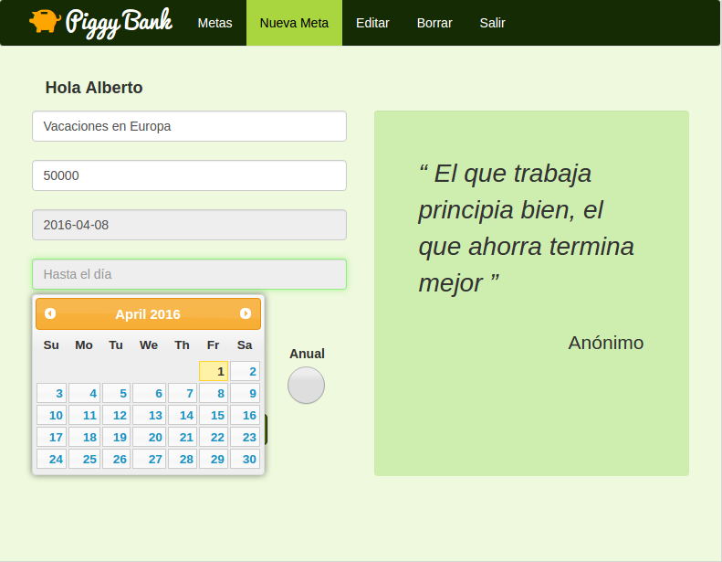

Piggy Bank
Administrador de ahorros. El usuario se registra y crea una meta de ahorros por día, semana, mes o año. La aplicación calcula cuanto se debe abonar cada determinado tiempo.
Creada con:
- PHP/PostgreSQL/MySQL
- JavaScript
- jQuery
- Diseño responsivo con Bootstrap 3
- Heroku
Piggy Bank en web
ver código en Github.com
